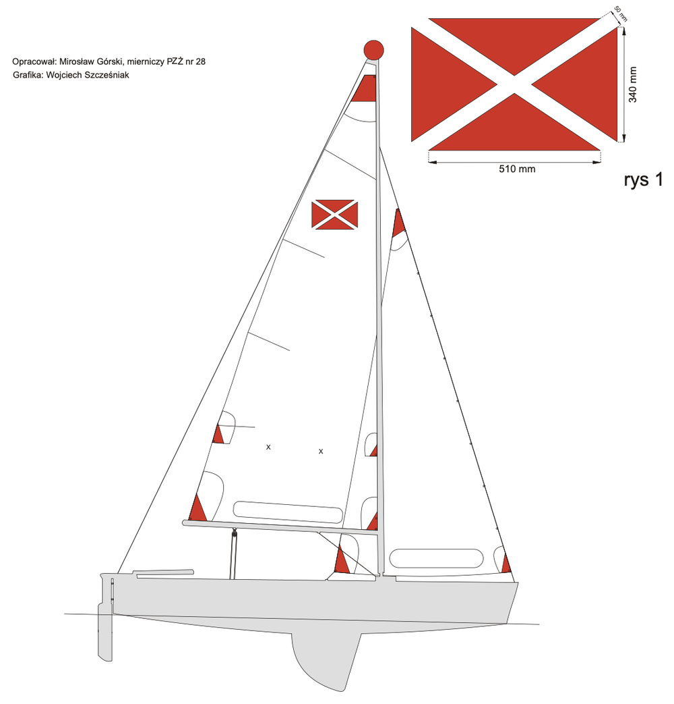

What is a Puck?
If you're sailing at the Jamboree, this is the boat under you. The Puck is a small Polish sail-training boat — and it's about as friendly a first boat as you could ask for.

A boat named after a town
The Puck (say it "pootsk", not like the hockey puck) takes its name from the town of Puck and its bay, Zatoka Pucka, on Poland's Baltic coast just west of Gdańsk. That's where it was born, and it's still where most of them sail. It's a two-sail boat — a big mainsail and a smaller jib in front — about the length of a small car, sailed by a crew of anywhere from two to six.
Where it comes from
In the mid-1990s the sea scouts at the Scout Maritime Centre in Puck had a problem: their old training dinghies were worn out, and the local bay is a demanding place to learn. So in 1996, a local shipwright and sailor named Franciszek Lewiński designed them a new boat — tougher, simpler, and safer. He called it the Puck. The first one sailed in May 1996; a fleet of fifteen was blessed and named the next spring, and a class association formed in 1997.
Today the design belongs to ZHP — the Polish Scouting Association — which makes the Puck, quite literally, a scout's boat. Around 80 of them sail on Puck Bay, and there may be several hundred across Poland. Lewiński, who became an honorary citizen of the town, passed away in 2025; the boats are his legacy.
Why it's a great boat to learn on
The Puck was built for exactly one job: teaching people to sail without scaring them. It is very stable — it barely leans over, even in a fresh breeze — and it is unsinkable, so a swamped or capsized boat floats and can be recovered. It's simple, strong, and hard for a learner to break. As the people who sail it like to say:
"We wanted a boat so friendly that even if you let go of the ropes, nothing bad happens — the Puck just looks after you."
Experienced sailors race them hard; complete beginners potter about safely in the same boat. That's a rare and lovely quality, and it's why the Jamboree sails Pucks rather than something faster and twitchier.
The Puck in numbers
The centreboard lifts and lowers, so the boat can sail in deep water and then slip into the shallows — handy on a river and on a shallow bay alike.
Out on the water
At the Jamboree you'll sail the Puck on the Martwa Wisła — the "Dead Vistula," a calm, sheltered arm of the great Vistula river. It's flat water with room to learn, and the boat is happiest in a steady breeze of around 10–16 knots. It’s officially rated for sheltered waters — calm bays and rivers exactly like this one. When it blows harder, the crew takes a reef — folding part of the mainsail away to make it smaller — and keeps sailing. Your instructors watch the wind and make the call; if you're curious what the numbers mean, the wind limits page lays it out.